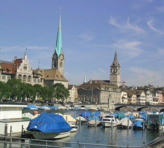

 During the past decade, integrated model-based design of complex cyber-physical systems (which mix physical dynamics with software and networks) has gained significant attention. Hybrid modeling languages based on equations, supporting both continuous-time and event-based aspects (e.g. Modelica, SysML, VHDL-AMS, and Simulink/ Simscape) enable high-level reuse and integrated modeling capabilities of both the physically surrounding system and software for embedded systems. The EOOLT workshop addresses the current state of the art of such equation-based object-oriented (EOO) modeling languages, as well as open issues that currently still limit their expressiveness, correctness, and use-fulness. Moreover, integration of and comparison with related approaches and languages, such as actor-oriented, synchronous, and domain specific languages, are of particular interest.